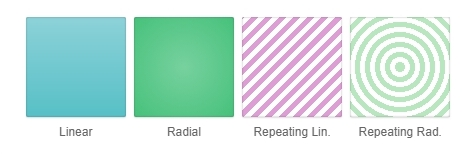
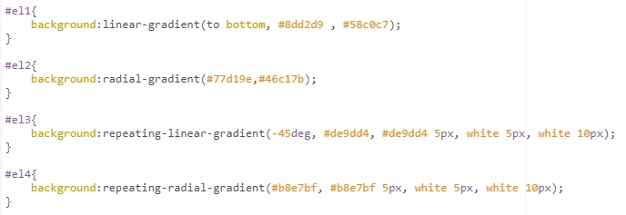
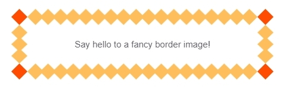
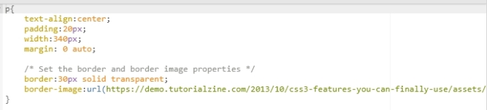
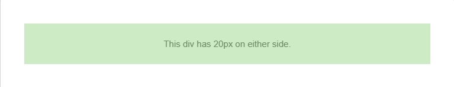
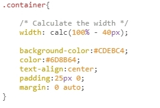
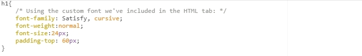
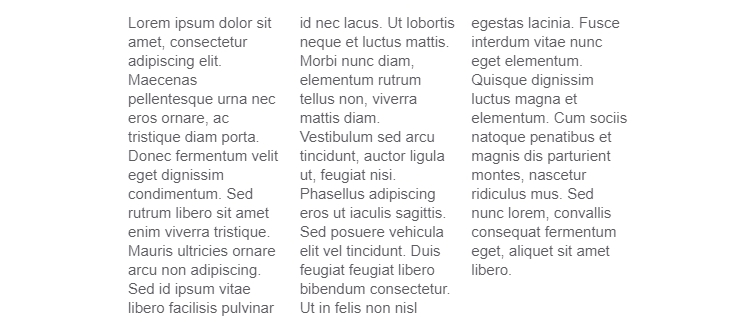
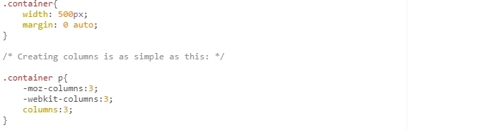
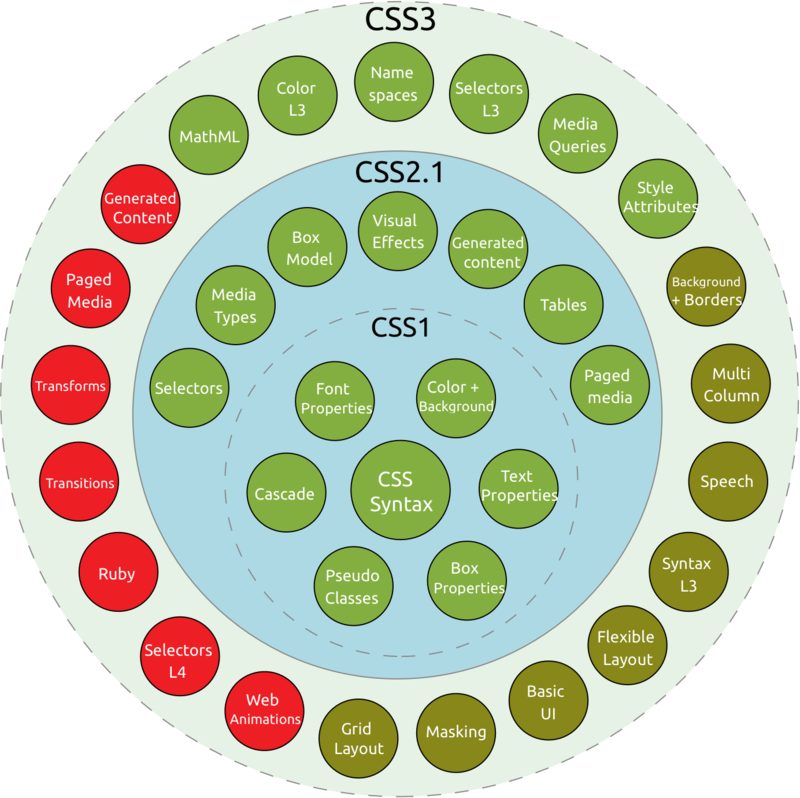

by Kachubeyeva Veranika
CSS3 is the latest evolution of the Cascading Style Sheets language and aims at extending CSS2.1.
It brings a lot of long-awaited novelties.






E:empty
E:first-child
E:last-child
E:nth-of-type(n)
E:active
E:hover
and many other
Advanced Selectors



border-radius
box-shadow
opacity
background-size
CSS 3D Transforms
Taxonomy and status of CSS3 modules.
Useful links
CSS3Semantics is the study of the meanings of words and phrases in a language.
Semantic elements = elements with a meaning.